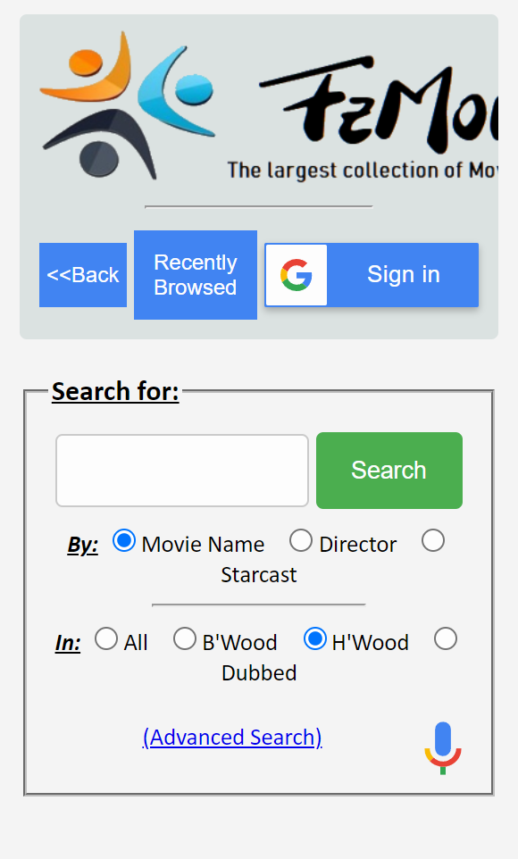
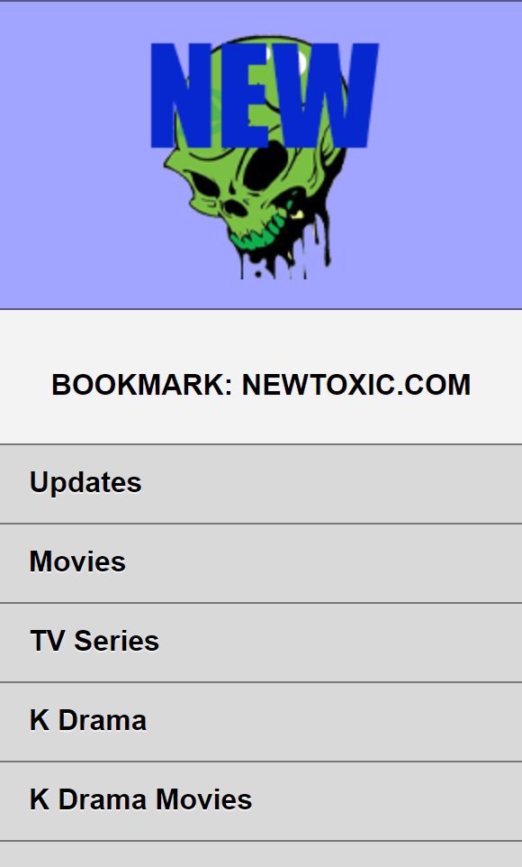

PARC: Contrast
W3schools
www.w3schools.comThe screenshot from W3schools illustrates contrast. Looking at the color choice of the page makes it possible for the texts to be visible for human readability.
White Space and Clean Design
FZ Movies
www.fzmovies.net Looking at the page in the image, you could see there are lots of white spaces on it. Making it illustrate the White Space and Clean Design principle.
Visual Hierarchy
New Toxic
www.newtoxic.com The graphic in the header of the website really stands out. Which has really displayed the concept of Visual Hierarchy.